Warning in as.POSIXlt.POSIXct(Sys.time()): unknown timezone 'zone/tz/2018c.
1.0/zoneinfo/America/Chicago'Last updated: 2018-03-20
Code version: 9032a51
library(medinome)Loading required package: ggplot2library(limma)Warning: package 'limma' was built under R version 3.4.3library(qvalue)Warning: package 'qvalue' was built under R version 3.4.2library(ashr)Warning: package 'ashr' was built under R version 3.4.3Example 1: when X and M are not correlated, then there’s no difference between regressing out and the single-mediator approach.
n <- 10
mu_y <- c(-1,1)
xx <- rep(c(1,2), each = n)
yy <- c(rnorm(n, mu_y[1], sd = 1), rnorm(n, mu_y[2], sd = 1))
mm <- rnorm(2*n)
plot(x=mm, y = yy,
col=xx)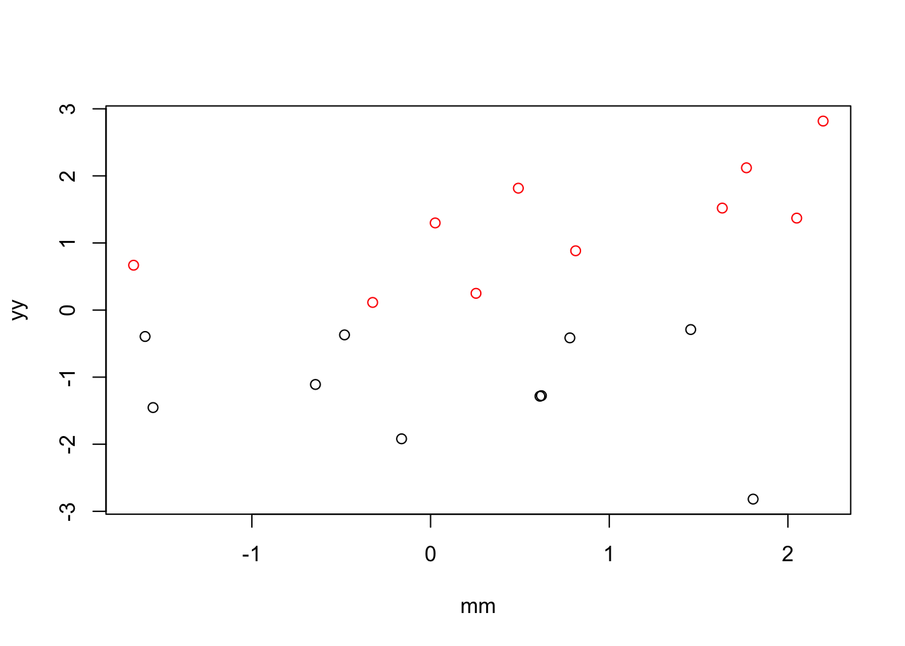
fit <- lm(yy~factor(xx))
fit.joint <- lm(yy~factor(xx)+mm)
y.resid <- residuals(lm(yy~mm))
fit.reg <- lm(y.resid~factor(xx))
coef(summary(fit)) Estimate Std. Error t value Pr(>|t|)
(Intercept) -1.132944 0.2617891 -4.327697 4.054294e-04
factor(xx)2 2.418922 0.3702258 6.533640 3.849564e-06coef(summary(fit.joint)) Estimate Std. Error t value Pr(>|t|)
(Intercept) -1.1462347 0.2625035 -4.3665501 4.203115e-04
factor(xx)2 2.3167681 0.3852565 6.0135738 1.396135e-05
mm 0.1593831 0.1634743 0.9749734 3.432439e-01coef(summary(fit.reg)) Estimate Std. Error t value Pr(>|t|)
(Intercept) -1.072705 0.2740738 -3.913927 1.017349e-03
factor(xx)2 2.145409 0.3875988 5.535128 2.960225e-05Example 2: when X and M are positively correlated, including M in the model increases the magnitude of the coefficient for X.
n <- 10
mu_y <- c(-1,1)
xx <- rep(c(1,2), each = n)
cor <- .5
yy <- c(rnorm(n, mu_y[1], sd = 1), rnorm(n, mu_y[2], sd = 1))
mm <- xx*cor + rnorm(2*n)
plot(x=mm, y = yy,
col=xx)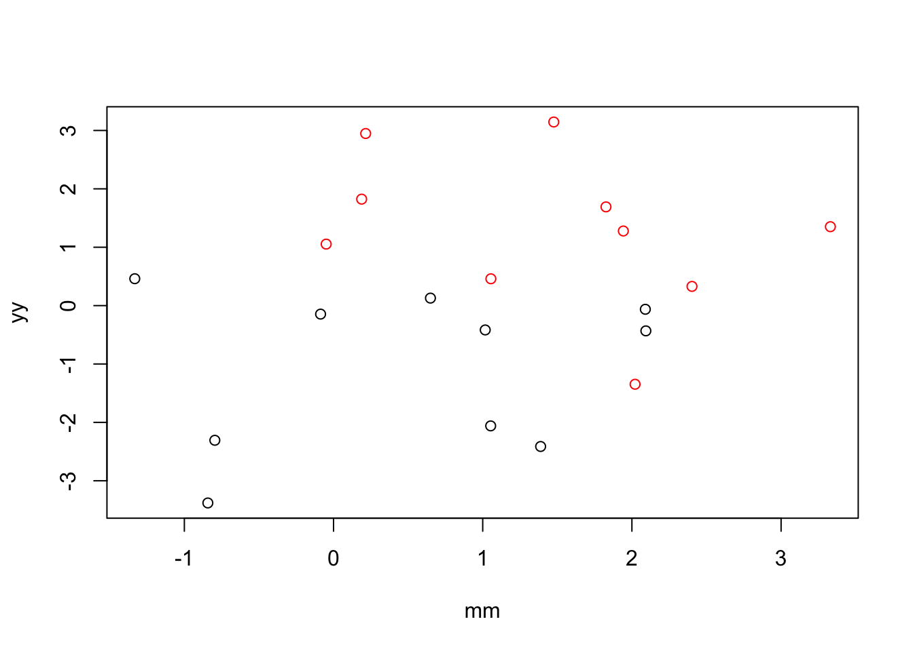
fit <- lm(yy~factor(xx))
fit.joint <- lm(yy~factor(xx)+mm)
y.resid <- residuals(lm(yy~mm))
fit.reg <- lm(y.resid~factor(xx))
coef(summary(fit)) Estimate Std. Error t value Pr(>|t|)
(Intercept) -1.062910 0.4176090 -2.545227 0.0203013034
factor(xx)2 2.336172 0.5905884 3.955669 0.0009269952coef(summary(fit.joint)) Estimate Std. Error t value Pr(>|t|)
(Intercept) -1.03270042 0.4527018 -2.2811933 0.03570079
factor(xx)2 2.38912799 0.6573810 3.6343124 0.00205036
mm -0.05771885 0.2752848 -0.2096696 0.83641767coef(summary(fit.reg)) Estimate Std. Error t value Pr(>|t|)
(Intercept) -1.018232 0.4403375 -2.312391 0.03279458
factor(xx)2 2.036465 0.6227313 3.270214 0.00425171Example 3: when X and M are correlated, including M in the model increases the magnitude of the coefficient for X.
n <- 10
mu_y <- c(-1,1)
xx <- rep(c(1,2), each = n)
cor <- -2
yy <- c(rnorm(n, mu_y[1], sd = 1), rnorm(n, mu_y[2], sd = 1))
mm <- xx*cor + rnorm(2*n)
plot(x=mm, y = yy,
col=xx)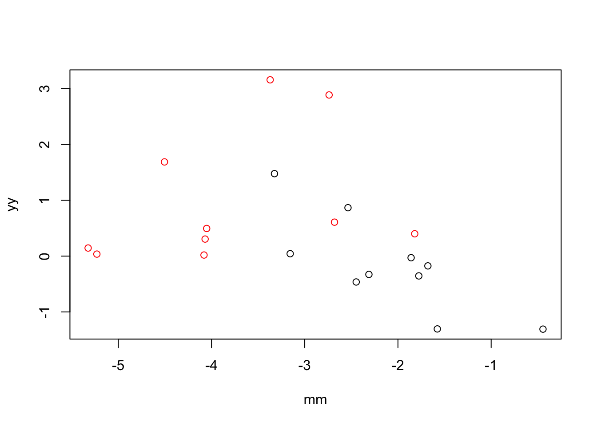
fit <- lm(yy~factor(xx))
fit.joint <- lm(yy~factor(xx)+mm)
y.resid <- residuals(lm(yy~mm))
fit.reg <- lm(y.resid~factor(xx))
coef(summary(fit)) Estimate Std. Error t value Pr(>|t|)
(Intercept) -0.1574929 0.3260367 -0.4830527 0.63488144
factor(xx)2 1.1316104 0.4610855 2.4542311 0.02452807coef(summary(fit.joint)) Estimate Std. Error t value Pr(>|t|)
(Intercept) -0.2721087 0.6260328 -0.4346557 0.6692795
factor(xx)2 1.0406218 0.6330391 1.6438508 0.1185716
mm -0.0542894 0.2504937 -0.2167296 0.8309986coef(summary(fit.reg)) Estimate Std. Error t value Pr(>|t|)
(Intercept) -0.2914674 0.3367761 -0.8654634 0.3981731
factor(xx)2 0.5829349 0.4762734 1.2239501 0.2367509Conclusion: When X and M are positively correlated, including M in the linear model of Y ~ X leads to an increase in the effect size of X (i.e., the effect size of X increases conditioned on values of M). When X and M are negatively correlated, including M in the linear model of Y ~ M leads to a decrease in the effect sizes of X.
In the multiple predictor approach, the regression coefficient of X is equivalent to regressing the residuals of X fitted on M onto the residuals of Y fitted on M.
In the regressing out approach, the regression coefficient of X is equivalent to regressing the X onto the residuals of Y fitted on M.
n <- 10
mu_y <- c(-1,1)
xx <- rep(c(1,2), each = n)
cor.list <- seq(-5, 5, .1)
yy <- c(rnorm(n, mu_y[1], sd = 1), rnorm(n, mu_y[2], sd = 1))
mm.list <- lapply(1:length(cor.list), function(i) xx*cor.list[[i]] + rnorm(2*n))
res <- do.call(rbind, lapply(1:length(cor.list), function(i) {
fit <- lm(yy~factor(xx))
fit.joint <- lm(yy~factor(xx)+mm.list[[i]])
y.resid <- residuals(lm(yy~mm.list[[i]]))
fit.reg <- lm(y.resid~factor(xx))
data.frame(d.joint=coef(summary(fit))[2,1]-coef(summary(fit.joint))[2,1],
d.reg=coef(summary(fit))[2,1]-coef(summary(fit.reg))[2,1])
}))corrs <- sapply(1:length(cor.list), function(i) cor(mm.list[[i]], xx))
par(mfrow=c(2,2))
plot(corrs, res$d.joint,
xlab = "Correlation between X and M",
ylab = "tau-tau.prime")
points(corrs, res$d.reg, col = "red")
legend("top", legend =c("joint model", "regressing out approach"),
col = c(1,2), pch =1, cex=.3)
mm.diff <- sapply(1:length(mm.list), function(i) coef(lm(mm.list[[i]]~factor(xx)))[2])
plot(mm.diff, res$d.joint,
xlab = "Condition differences in M",
ylab = "tau-tau.prime")
points(mm.diff, res$d.reg, col = "red")
legend("top", legend =c("joint model", "regressing out approach"),
col = c(1,2), pch =1, cex=.3)
plot(mm.diff, corrs,
xlab = "Condition differences in M",
ylab = "Correlation between X and M")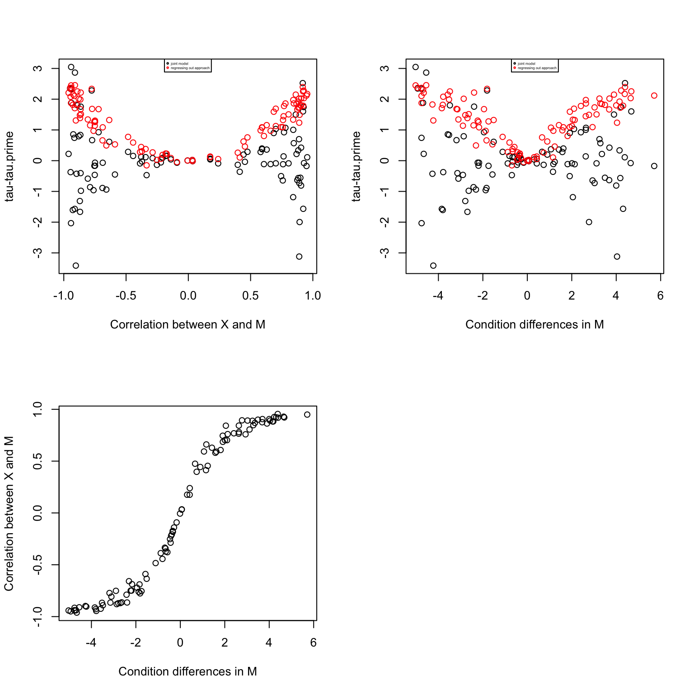
par(mfrow=c(1,1))
plot(corrs, res$d.joint, ylim=range(c(res$d.joint, res$d.reg)),
xlab = "Correlation between X and M",
ylab = "tau-tau.prime")
points(corrs, res$d.reg, col = "red")
legend("top", legend =c("joint model", "regressing out approach"),
col = c(1,2), pch =1, cex=.7)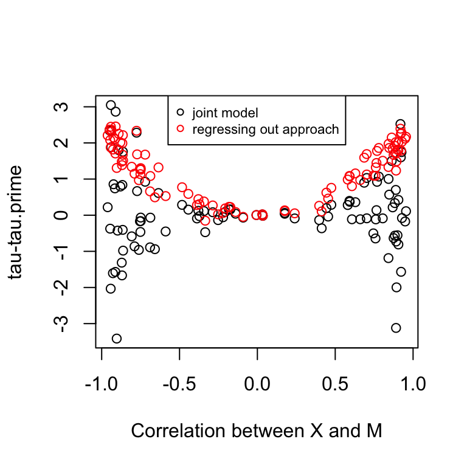
Conclusion:
In the regressing out approach, the coefficient of X decreases always. However, the partial regressing coefficient of X in the joint modeling approach increases always. The two approaches give similar results when there’s little correlation between X and M. The two regressing coefficients model different effects. In the regressing out approach, the coefficient corresponds to the effect of species on expression after removing variation due to methylation, while the coefficient in the joint modeling approach corresponds to the effect of species on expression after removing variation due to methylation and at a fix level of methylation. So in the regressing out approach, we are not accounting for species differences in methylation, while the joint modelling approach estimate expression differences given no species differences in methylation.
It is conceivable why there’s fewer differences in tau-tau.prime in the permutated data. Fewer genes now have significant correlation between X and M, which then translates into small chnages in tau.prime. The results that there are more significant tau-tau.prime in the permutated data can be interpretated as: after removing species differences in methylation, there are way more significant effects in expression; in other words, species differences in expression were previously suppressed by differences in methylation.
In the multiple predictor approach, the regression coefficient of X is equivalent to regressing the residuals of X fitted on M onto the residuals of Y fitted on M.
In the regressing out approach, the regression coefficient of X is equivalent to regressing the X onto the residuals of Y fitted on M.
n <- 10
mu_y <- c(-1,1)
xx <- rep(c(1,2), each = n)
cor.list <- seq(-5, 5, .1)
yy <- c(rnorm(n, mu_y[1], sd = 1), rnorm(n, mu_y[2], sd = 1))
mm.list <- lapply(1:length(cor.list), function(i) yy*cor.list[[i]] + rnorm(2*n))
res <- do.call(rbind, lapply(1:length(cor.list), function(i) {
fit <- lm(yy~factor(xx))
fit.joint <- lm(yy~factor(xx)+mm.list[[i]])
y.resid <- residuals(lm(yy~mm.list[[i]]))
fit.reg <- lm(y.resid~factor(xx))
data.frame(d.joint=coef(summary(fit))[2,1]-coef(summary(fit.joint))[2,1],
d.reg=coef(summary(fit))[2,1]-coef(summary(fit.reg))[2,1])
}))corrs <- sapply(1:length(cor.list), function(i) cor(mm.list[[i]], xx))
par(mfrow=c(2,2))
plot(corrs, res$d.joint,
xlab = "Correlation between Y and M",
ylab = "tau-tau.prime")
points(corrs, res$d.reg, col = "red")
legend("top", legend =c("joint model", "regressing out approach"),
col = c(1,2), pch =1, cex=.4)
mm.diff <- sapply(1:length(mm.list), function(i) coef(lm(mm.list[[i]]~factor(xx)))[2])
plot(mm.diff, res$d.joint,
xlab = "Condition differences in M",
ylab = "tau-tau.prime")
points(mm.diff, res$d.reg, col = "red")
legend("top", legend =c("joint model", "regressing out approach"),
col = c(1,2), pch =1, cex=.4)
plot(mm.diff, corrs,
xlab = "Condition differences in M",
ylab = "Correlation between X and M")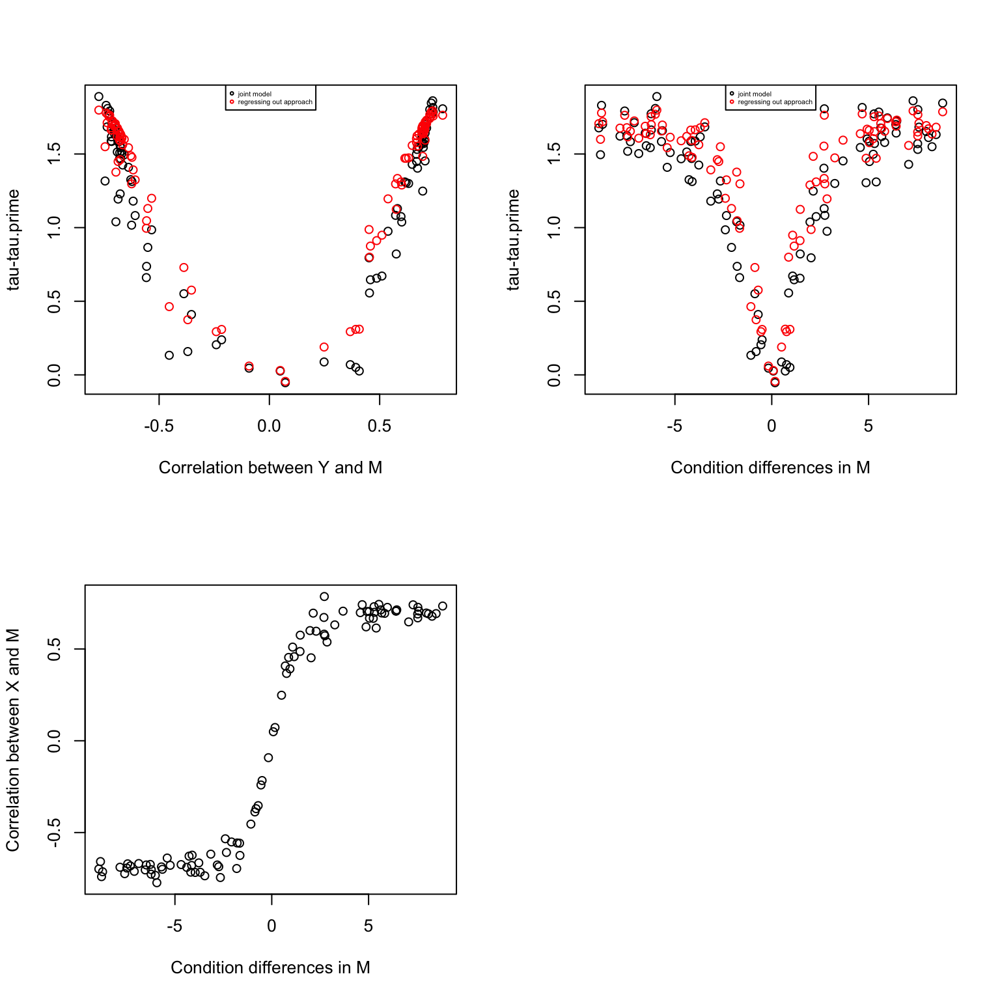
Take from Lauren’s data comparing kidney versus heart tissue samples.
df <- get(load("../data/example-kidney-v-heart-human.rda"))
Y=df$exprs_pair
X=df$tissue
M=df$methyl_pair
# scale gene expression to mean 0 and standard deviation 1 for each gene
Y <- t(scale(t(Y)))
M <- t(scale(t(M)))
# apply limma to scaled expression to select DE genes
design_1 <- model.matrix(~X)
Y_counts <- 2^Y
Y_voom <- voom(Y_counts, design=design_1, normalize.method = "none")
model_1 <- lmFit(Y_voom, design_1)
model_1 <- eBayes(model_1)
# qvaule package for FDR control
qval <- qvalue(model_1$p.value[,2])
# select DE genes with q-value < .05
ii.de <- which(qval$qvalues < .05)
Y.de <- Y[ii.de, ]
M.de <- M[ii.de, ]
# fitting mediation test
fit.voom <- mediate.test.voom(Y=Y.de, X=X, M=M.de)
# create a permutated dataset
M.permute <- do.call(rbind, lapply(1:nrow(M.de), function(g) {
m.perm <- sample(M.de[g,])
return(m.perm)
}))
fit.voom.perm <- mediate.test.voom(Y=Y.de, X=X, M=M.permute)
nsam <- ncol(Y.de)
# fit ash and get s-values
nsam <- ncol(Y.de)
fit.ash <- ash(fit.voom$d,
fit.voom$se.fs, df=nsam-2,
mixcompdist = "uniform",
method = "fdr")
fit.ash.perm <- ash(fit.voom.perm$d, fit.voom.perm$se.fs,
df=nsam-2,
mixcompdist = "uniform",
method = "fdr")mean(fit.ash$result$svalue<.01)[1] 0.4040805mean(fit.ash.perm$result$svalue<.01)[1] 0.4947577For most of the genes, s-value becomes smaller.
plot(fit.ash$result$svalue,
fit.ash.perm$result$svalue)
abline(0,1, col = "blue")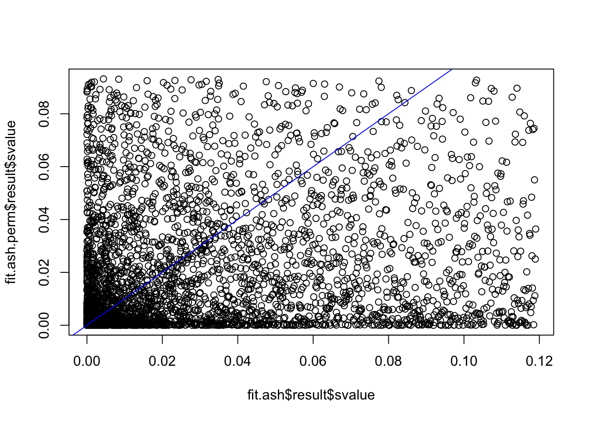
# genes turned signficant in permuted data and not in the original data
ii <- which(fit.ash.perm$result$svalue < .01 & fit.ash$result$svalue > .01)
length(ii)[1] 807# after permutation, there are more small effect sizes
ind <- fit.ash.perm$result$svalue < .01 & fit.ash$result$svalue > .01
par(mfrow=c(2,2))
plot(fit.ash$result$betahat, fit.ash.perm$result$betahat,
col = as.numeric(ind) + 1)
plot(fit.ash$result$PosteriorMean, fit.ash.perm$result$PosteriorMean,
col = as.numeric(ind) + 1)
plot(fit.ash$result$betahat, fit.ash$result$PosteriorMean,
col = as.numeric(ind) + 1)
plot(fit.ash.perm$result$betahat, fit.ash.perm$result$PosteriorMean,
col = as.numeric(ind) + 1)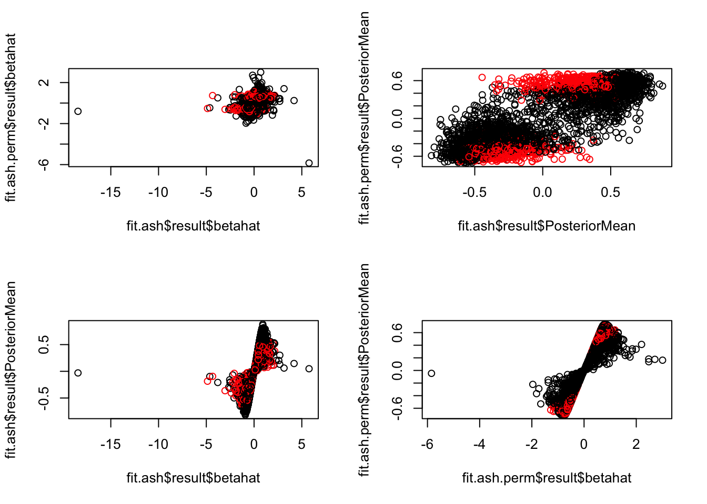
par(mfrow=c(1,2))
plot(fit.ash$result$betahat,
fit.ash$result$sebetahat, ylim=c(0,4), xlim=c(-5,5),
col = as.numeric(fit.ash.perm$result$svalue < .01)+1)
plot(fit.ash.perm$result$betahat,
fit.ash.perm$result$sebetahat, ylim=c(0,4), xlim=c(-5,5),
col = as.numeric(fit.ash.perm$result$svalue < .01)+1)
title("permuted s-value < .01", outer = TRUE, line = -1)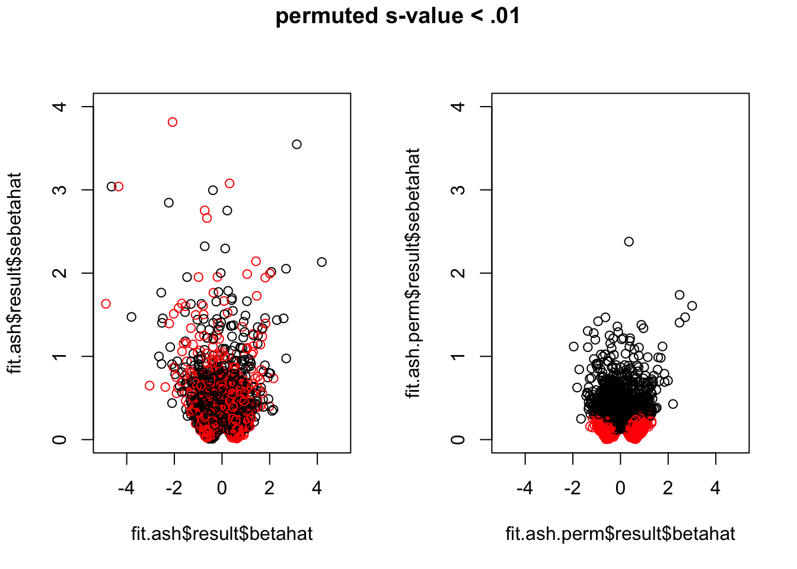
par(mfrow=c(1,2))
plot(fit.ash$result$betahat,
fit.ash$result$sebetahat, ylim=c(0,4), xlim=c(-5,5),
col = as.numeric(fit.ash$result$svalue < .01)+1)
plot(fit.ash.perm$result$betahat,
fit.ash.perm$result$sebetahat, ylim=c(0,4), xlim=c(-5,5),
col = as.numeric(fit.ash$result$svalue < .01)+1)
title("permuted s-value < .01", outer = TRUE, line = -1)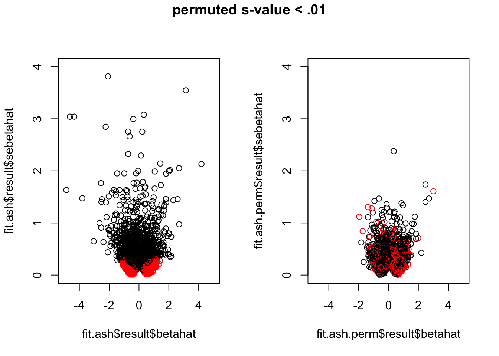
why se smaller in permuted data!! consider the composition of the standard error…
par(mfrow=c(1,2))
ind <- fit.ash.perm$result$svalue < .01 & fit.ash$result$svalue > .01
plot(fit.voom$sigma_tau_prime,
fit.voom.perm$sigma_tau_prime,
col = as.numeric(ind) + 1)
ind2 <- fit.ash.perm$result$svalue > .01 & fit.ash$result$svalue < .01
plot(fit.voom$sigma_tau_prime,
fit.voom.perm$sigma_tau_prime,
col = as.numeric(ind2) + 1)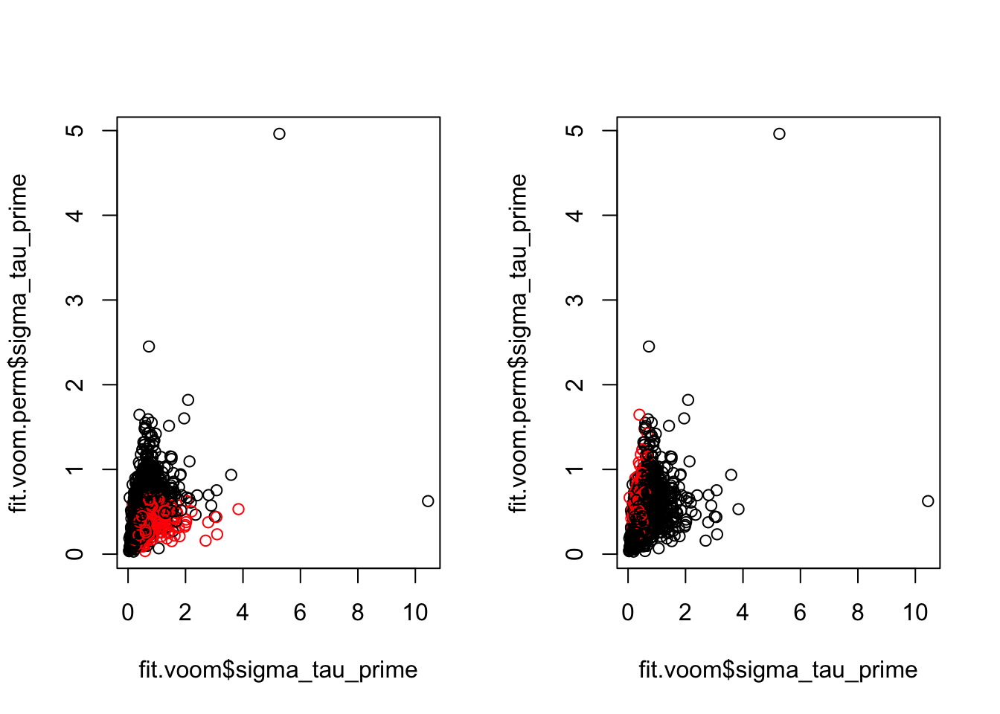
How about the correlation between X and M? Seems that after permutation, some genes go from no correlation between X and M (i.e., no methylation difference) to significant correlation between these two, which consequently results in smaller standard error for tau-tau_prime.
par(mfrow=c(1,2))
ind <- fit.ash.perm$result$svalue < .01 & fit.ash$result$svalue > .01
plot(fit.voom$sigma_tau_prime,
fit.voom$corr.xm,
col = as.numeric(ind) + 1)
ind <- fit.ash.perm$result$svalue < .01 & fit.ash$result$svalue > .01
plot(fit.voom.perm$sigma_tau_prime,
fit.voom.perm$corr.xm,
col = as.numeric(ind) + 1)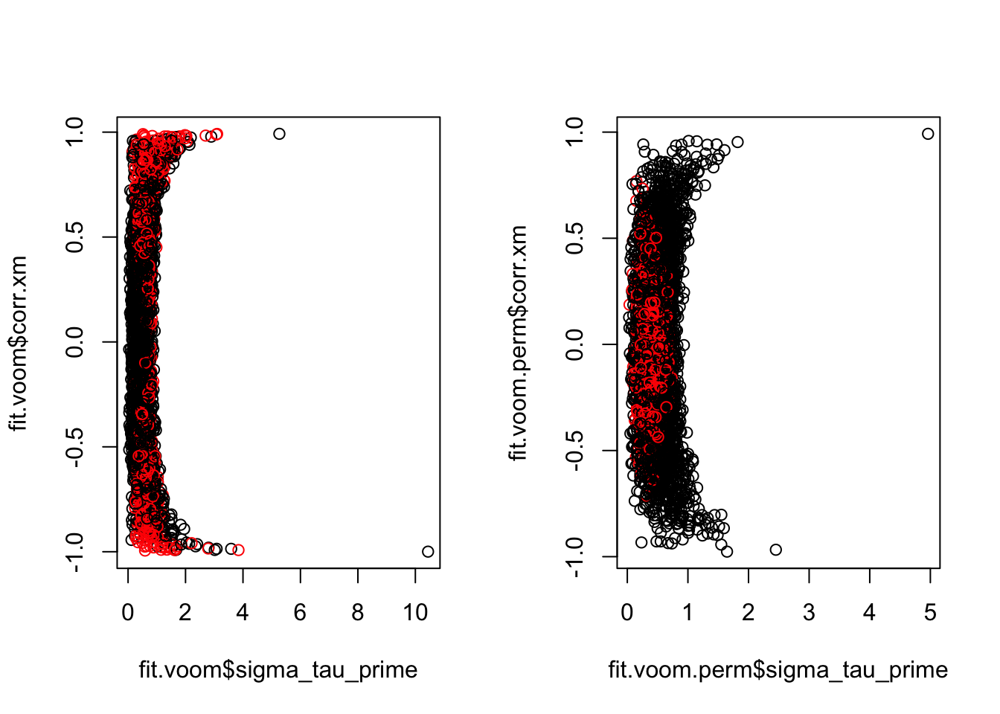
Correlation and svalue.
par(mfrow=c(1,2))
plot(fit.voom$corr.xm,
fit.ash$result$svalue)
plot(fit.voom.perm$corr.xm,
fit.ash.perm$result$svalue)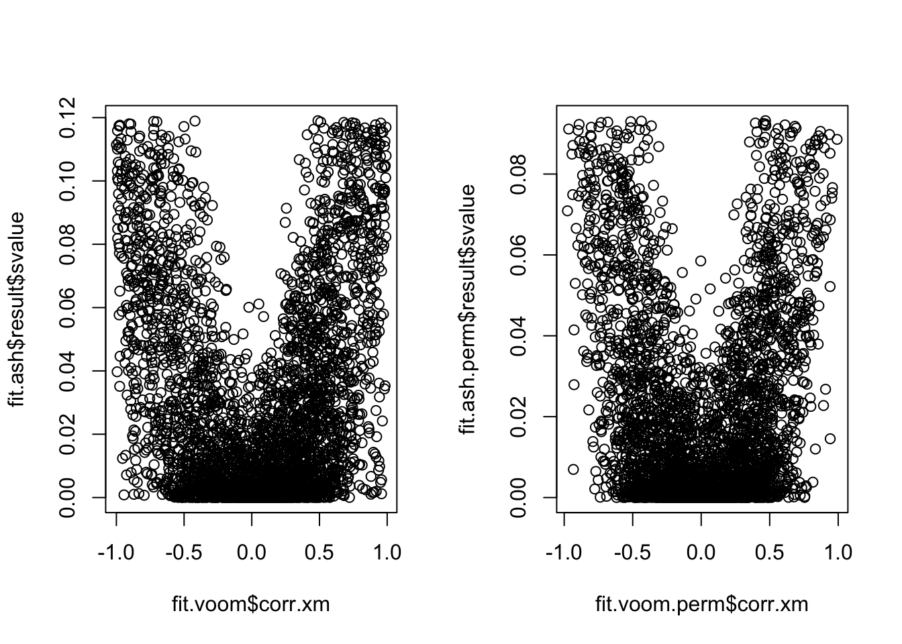
Additional analysis: conditioned on species differences in methylation. Only 5% DE genes have significant species differences in methylation.
fit.M <- lmFit(M.de, design=model.matrix(~X))
fit.M <- eBayes(fit.M)
fit.M.sval <- ash(fit.M$coefficients[,2],
fit.M$stdev.unscaled[,2]*fit.M$sigma,
df = length(X)-2)
mean(fit.M.sval$result$svalue < .01)[1] 0.05327288The regressing out approach removes variation due to methylation in expession. In the case where there’s large species differene in methylation (all assuming DE expression genes here), then species differences in expression will reduce in the corrected model.
Considering the joint modeling approach, when there’s no species difference in methylation, including it as a covariate does not change the coefficient of species. If species is correlated with methylation, then there are two possiblities that may occur: 1) the effect of species on expression increased or enhanced after including methylation as a covariate, 2) the effect of species on experssion reduced after including methylation as a covariate. The former suggests that methylation differences in species actually “suppress” the effect of species on expression, such that by controlling for it, we observe a larger difference. The latter suggets that methylation differences in species actually mediates the effect of species on experssion, such that by including it as a covariate, the effect of species on expression attenuates.
Permutation test: The permutation induces smaller correlations between X and M than the non-permuted data between species and methylatin. Small correlation between X and M translates into small standard error. This is probably why there are so many more significant results in the permuted data. Note that although there are more small effects in the permuted data, but the effect of standard error (order of 1 difference) outweights the small change in effect size. A quick test of Lauren’s data showed that the correlation distribution determines the signal of species differences after controlling for methylation. In fact, the result that there are more significant direct effect in the permuted data makes total sesnse, this means that smaller speciees differences between methylation corresponds to stronger species differences in expression.
But how to explain differences between species coefficient in the “regressing out” aproach versus that in the single-mediator model?? In the “regressing out” approach, the effect corresponds to the effect of species on expression adjusted for correlation with methylation, regardless of species differences in methylation. In the single-mediator model or aka the joint modeling approach, the effect corresponds to the effect of species on expression after adjusting for correlation with methylation and also the differences between species in methylation. After permutation when there are no methylation differences, the effects are largely unchanged in the “regressing out” approach, so there are fewer signfiicant effect in the permuted data versus in the real data. On the contrary, in the joint modeling approach, the previously signficant differences between species that could be contributed to methylation differences are now associated with much smaller methylation differences, so the effect due to species on expression alone are bigger, and hence the smaller change in the marginal effect of species on expression. In summary, the “regressing out” approach doesn’t account for species differences in methylation, it asks what would happen if the variation in expression is not due to methylation at all, and the results tell us that species differences in expression would be greater; in other words, the effect of species on expression is suppressed by correlation (negative?) between methylation and expression. The joint modeling approach, on the other hand, it asks what woudl happen if the variation in expression is not due to methylation, and if there’s no species differences in methylation, and the results suggest that without species differences in methylation (increase in null correlation in the permuted data), the effect of species on expression is greater, which also support the hypothesis that species differences in methylation suppress species differences in expression.
sessionInfo()R version 3.4.1 (2017-06-30)
Platform: x86_64-apple-darwin15.6.0 (64-bit)
Running under: macOS High Sierra 10.13
Matrix products: default
BLAS: /Library/Frameworks/R.framework/Versions/3.4/Resources/lib/libRblas.0.dylib
LAPACK: /Library/Frameworks/R.framework/Versions/3.4/Resources/lib/libRlapack.dylib
locale:
[1] en_US.UTF-8/en_US.UTF-8/en_US.UTF-8/C/en_US.UTF-8/en_US.UTF-8
attached base packages:
[1] stats graphics grDevices utils datasets methods base
other attached packages:
[1] assertthat_0.2.0 ashr_2.2-7 qvalue_2.10.0 limma_3.34.9
[5] medinome_0.0.1 ggplot2_2.2.1
loaded via a namespace (and not attached):
[1] Rcpp_0.12.15 pillar_1.2.1 compiler_3.4.1
[4] git2r_0.21.0 plyr_1.8.4 iterators_1.0.9
[7] tools_3.4.1 etrunct_0.1 digest_0.6.15
[10] evaluate_0.10.1 tibble_1.4.2 gtable_0.2.0
[13] lattice_0.20-35 rlang_0.2.0 Matrix_1.2-12
[16] foreach_1.4.4 yaml_2.1.18 parallel_3.4.1
[19] stringr_1.3.0 knitr_1.20 REBayes_1.3
[22] rprojroot_1.3-2 grid_3.4.1 rmarkdown_1.9
[25] reshape2_1.4.3 magrittr_1.5 backports_1.1.2
[28] scales_0.5.0 codetools_0.2-15 htmltools_0.3.6
[31] splines_3.4.1 MASS_7.3-49 colorspace_1.3-2
[34] stringi_1.1.6 Rmosek_8.0.69 lazyeval_0.2.1
[37] munsell_0.4.3 doParallel_1.0.11 pscl_1.5.2
[40] truncnorm_1.0-8 SQUAREM_2017.10-1This R Markdown site was created with workflowr